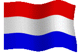

Mart!n's Website!
Home:
Heya, welcome to my website! This is my personal site where i upload randoms stuff and some other things! I am also working on a blog!! This site also serves as a test for CSML, my own little language for creating HTML but with C#!
I'm Mart!n, a programmer from the netherlands.
My main language is C# and i use it for basically everything, including this website.
I am currently learning ML and malware development!

About me:
Hey there! You found the about me section. I'm Mart!n, the creator of this beautiful moder website!
Im passionate about everything IT and technology related, personal favourites include, programming and machine learning!
I usually program fully in C# because its a really easy to read and write language that can basically do anything!!
Recently ive been learning tensorflow.net which is a C# version of the Python library tensorflow, its been fun so far and the science behind it all is really interesting.
I also have been working on a CSML designer! more on that at the csml page!
If you wanna contact me scroll on down to the contact page and dm me on discord!
Projects:
projects, this will be filled with a list of all my projects!
Nothing yet!
Contact:
If you need to get in touch with me, feel free to send me a DM on discord: Mart!n#4834. I'll do my best to respond to your message as soon as possible. I'm available most days and am always happy to hear from you. Whether you have a question about one of my services, a project im working on, or just want to say hello, don't hesitate to reach out. I look forward to connecting with you soon! You can also use the contact box below to message me!
CSML:
CSML: C-Sharp Markup Language CSML is a way of creating html using C#. Its a simple project made in a few weeks, but pretty useful if you dont like the syntax of HTML. This entire site was made in CSML, you can download the CSML json file from here. If you want to actually use CSML you can download CSML from my github.
Example CSML:
var csml = new CSML(new Element[]
{
new Div(new List
{
new H1("Welcome to the CSML Landing Site"),
new P("Learn the basics of CSML and create amazing landing sites with ease"),
new A("https://atomyc.me/csml", "Get Started Now"),
new Img("https://atomyc.me/img/csml.jpg", "CSML Landing Site Example"),
}),
});
Will result into:
<div>
<h1>Welcome to the CSML Landing Site <p>Learn the basics of CSML and create amazing landing sites with ease <a href="https://atomyc.me/csml">Get Started Now <img src="https://atomyc.me/img/csml.jpg" alt="CSML Landing Site Example">
</div>
CSML++ is a designer for CSML!
It uses winforms to manage projects, display a treeview of the project and display the current output.
This can be useful if you quickly want to make a simple website. I used it to make this very website. It took about 4 hours.
You can check out CSML++ on my github!